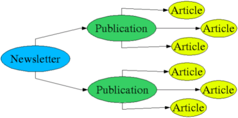
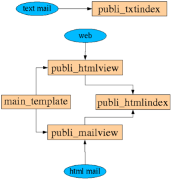

PloneNewsletter helps you to edit, send and publish newsletters. It is based
on Plone and CMF, so your HTML articles are managed into a powerful content
management system. PloneNewsletter adds the ability to manage subscribers,
it features an email sending mecanism and an automated subscription manager
(like most mailing-list managers). Moreover, it helps you create the html
summary and the text version of your newsletter for both mail and web versions.
Note : this is the user and admin guide only. For installation, see the INSTALL text file included with the source code.
Structure
Each newsletter is built with three different objects : one Newsletter, which
contains Publications, which contain Articles.

Note that you can put your Publications into a structure of directories if you wish.
The Newsletter Object
The newsletter object has properties including the "From" email, message
signature, etc... You can modify them clicking on the "edit" tab. There you
can also define the "Topics", which are categories in which articles may
be grouped together.
Moreover, it has a "users" tab when you can view, add or delete subscribers.
This is an admin access, there are not any message sent to the user that
has been added or deleted.
Zope administrators can access to the properties of the newsletter folder
using the Zope Management Interface. They will find further options :
mailskin: This is the name of the skin that should be applied to the html emailed version
: The text that requests the user to confirm its subscription replying to this message
The text that welcomes the user
unsubscription_message: The text that requests the user to confirm its unsubscription replying to this message
rconfirmation_message: The text that says good bye to the user
welcome_release: Name of the Publication containing the release to send to each new subscriber
IMPORTANT : If you set welcome_release, you must allow "Anonymous" to "List Folder Contents" on your newsletter folder
The Publication Object
A Publication object is a sort of folder which contains your articles. Is has three views :
the "web view" tab gives you a preview of what will be on the web (including subscription form)
the "mail view" tab is a preview of the html version that will be emailed
the "text view" tab is a preview of the text version that will be emailed
It also has a "customize" tab which generates index.html and index.txt. You can then customize theses generated indexes.
You will send the newsletter clicking on the "publishing" tab, and choosing
the "send" action. The "status" tab will tell you the status of the sending
process.
The Article Object
An Article is basically a Plone Document, preferably written in HTML. It
features a "Topic" property which allow you to group related articles together.
Available topics are defined in the Newsletter Object.
Skins and templates
It only requires standard Plone/CMF customization competences to modify the
skins and templates of PloneNewsletter. You will find the templates in portal_skins/plone_newsletter.
Here is a simple drawing to help you figure out how the templates work together:
 Remember that you can apply a different skin for the mail version (see section "The Newsletter Object").
Moreover, you can set a skin that is totally different for public web access and for
administrators or editors. The method for dynamic skinning is described on
http://www.zopelabs.com/cookbook/1028172355.
Please note that this "Cookbook" code really depends on the version of CMF
you are using. If you have problems, use the code and/or share your experience.